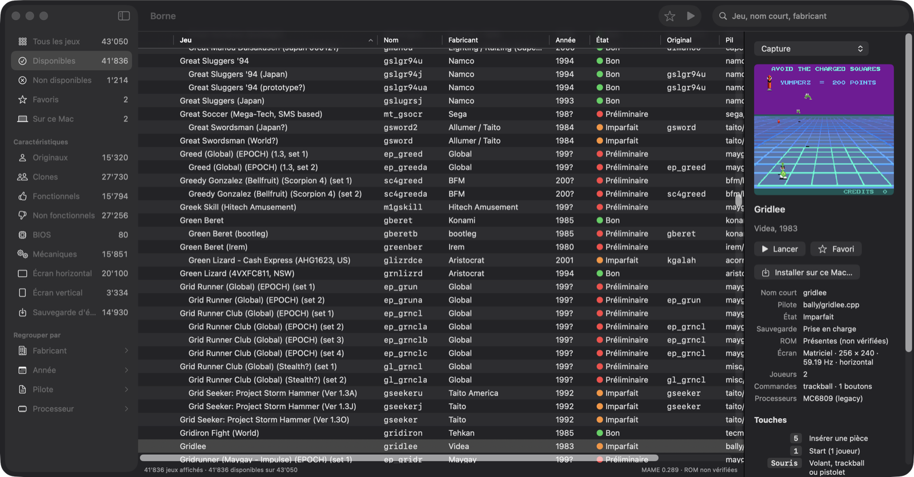

Borne
Votre salle d'arcade, rangée sur votre Mac.
Il y a les jeux de notre enfance, et le bruit des pièces dans la fente. MAME les fait revivre, presque tous, fidèlement.
Mais MAME est un moteur, pas une salle : sur Mac, on le pilote en ligne de commande, et les belles interfaces sont restées sur Windows. Une collection de 40 000 machines mérite mieux qu'un terminal.
Borne vous rend la salle : vos jeux rangés, retrouvés en un instant, lancés d'un double-clic.

Comment ça marche
- Montrez où sont vos jeux. Le dossier
roms, ou celui qui le contient, sur un disque externe si vous voulez. Borne le lit sans jamais rien y écrire. - Parcourez. Disponibles, favoris, fabricant, année, écran vertical : les dossiers de MAMEUI, et une recherche qui suit votre frappe.
- Jouez. Double-cliquez. Un aide-mémoire rappelle les touches : 5 pour la pièce, 1 pour Start, Échap pour revenir.
Ce que fait Borne
- Tout le catalogue, sans attendre
- Plus de 43 000 machines. Trier, filtrer ou chercher ne fige jamais la fenêtre ; un calcul en cours s'efface devant le dossier que vous ouvrez.
- Vos jeux restent intacts
- Le disque des jeux n'est que lu. Réglages, sauvegardes, meilleurs scores et captures vont dans votre dossier utilisateur.
- Jouer sans le disque externe
- « Installer sur ce Mac » copie un jeu, ou tous vos favoris, avec tout ce dont il a besoin : original, BIOS, samples. La taille est annoncée avant.
- Vérifier sa collection
- L'audit des ROM tourne en arrière-plan et s'interrompt quand vous voulez ; les verdicts apparaissent au fil de l'eau.
- Un clavier de Mac
- Les boutons sont sur Z X C… et non sur Ctrl, que macOS garde pour Mission Control. Un réglage d'affichage dérangé se remet d'un clic.
- Rien d'autre à installer
- MAME 0.289, compilé pour Apple silicon, est dans l'app. Signée et notarisée par Apple.
Questions
Borne contient-il des jeux ?
Non, aucun. Borne et MAME sont des logiciels ; les ROM des jeux restent à votre charge. N'utilisez que celles que vous avez le droit d'utiliser.
Est-ce vraiment gratuit ?
Oui. Borne est un logiciel libre sous licence GPL-3.0 ; son code est sur GitHub, et chacun peut y contribuer.
Et sur un Mac Intel ?
La version publiée vise les Mac Apple silicon. Le code source permet de compiler Borne et MAME ailleurs.
Borne est-il lié au projet MAME ?
Non. Borne est un projet indépendant qui embarque MAME, sans changement, sous sa licence. MAME est une marque déposée de Gregory Ember.